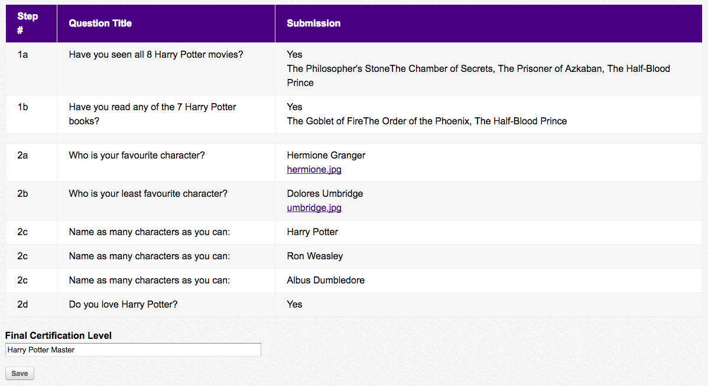

I've got 99 problems and our old code is all of them
About me
- Asha Ramji
- Web Developer at Digital Echidna
- 1.5 years of Drupal experience
- Studying computer science
- Harry Potter enthusiast
A bit of backstory
- Why an audit checklist?
- Certification made up of entityforms
- Admin interface to view results
- Additions added were never originally in scope, structure is now highly customized
The requirements
- Compare questions to the answers
- Only audit certain questions
- Include step numbers beside questions
- Form to track audit results
- Display each user's results in the admin interface
The problem
- Form questions change annually
- Auditted questions change annually
- Conditional fields & field collections
- Step numbers beside questions
Let me explain using Harry Potter
Can we use a view?
- Is it dynamic enough?
- Don't want to rebuild each year
- Need multiple question responses grouped together
- Questions have letters associated with them
Using a view
Without aggregation vs. with aggregation
Nope, can't use a view
- Aggregation settings don't group together properly
- Still need to customize to include step numbers
The solution
- Customize it the way we want and make it reusable
- Include file with questions to be auditted
- Include file containing associated letters
- Strictly structured to account for different field types
How are they structured?
- Field groups
- Fields with one response
- Fields with multiple responses (conditional fields)
- Field collections
checklist.questions.php
$questions = array(
// Harry Potter Certification
'harry_potter_certification' => array( // Form
'field_have_you_seen_all_8_harry_' => array( // Multiple Answers
'field_select_the_movies_you_ve_s',
),
'field_have_you_read_any_of_the_7' => array(
'field_select_the_books_you_ve_re',
),
),
// Harry Potter Certification Pt 2
'harry_potter_certification_pt_2' => array(
'field_who_is_your_favourite_char' => array(
'field_include_an_image',
),
'field_who_is_your_least_favourit' => array(
'field_include_another_image',
),
'field_name_as_many_characters_as' => array( // Field Collection
'field_character_name',
),
'field_do_you_love_harry_potter_', // Single Answer
),
);
letters.questions.php
$letters = array(
// Harry Potter Certification
'harry_potter_certification' => array(
'field_have_you_seen_all_8_harry_' => 'a',
'field_have_you_read_any_of_the_7' => 'b',
),
// Harry Potter Certification Pt 2
'harry_potter_certification_pt_2' => array(
'field_who_is_your_favourite_char' => 'a',
'field_who_is_your_least_favourit' => 'b',
'field_name_as_many_characters_as' => array(
'field_character_name' => 'c',
),
'field_do_you_love_harry_potter_' => 'd',
),
);
So what?
here's how this is gonna go
- Create empty arrays to hold questions, answers and steps
- Set step number associated with each form
- Pull question label and answer from each field, store in arrays
- Pass arrays to template to render table
Fields groups
if (array_key_exists($group_field_name, $questions[$step][$group->group_name])
&& !empty($entityform->{$group_field_name}[LANGUAGE_NONE][0]['value'])) {
_hp_audit_checklist_group_multiple_answers($entityform, $step, $group, $group_field_name, $questions, $answers);
}
- Checks if parent field contains multiple answers (ie. select list) or just one
- Combines into one row per field group
Fields collections
if (isset($questions[$step][$field_name])
&& is_array($questions[$step][$field_name])
&& isset($field[LANGUAGE_NONE][0]['revision_id'])) {
_hp_audit_checklist_field_collection_answers($step, $field, $field_name, $num, $questions, $answers);
}
- Loads all field collection items
- Each item rendered into its own row
- Items with conditional fields are grouped together
Fields with multiple answers
if (isset($questions[$step][$field_name])
&& is_array($questions[$step][$field_name])
&& !empty($field[LANGUAGE_NONE][0]['value'])) {
_hp_audit_checklist_multiple_answers($entityform, $step, $field_name, $field, $questions, $answers);
}
- Load response to parent field's question
- Checks if child field contains multiple answers (ie. select list) or just one
- Combine answers together in one row
Fields with one answer
if (sizeof($field[LANGUAGE_NONE]) > 1) {
foreach($field[LANGUAGE_NONE] as $key => $answer) {
// Create array item
$answers[$step][$field_name] = '';
if ($key == (sizeof($field[LANGUAGE_NONE])-1)) {
$answers[$step][$field_name] .= $answer['value'];
} else {
$answers[$step][$field_name] .= $answer['value'] . ', ';
}
}
} else {
// single answer
$answers[$step][$field_name] = $field[LANGUAGE_NONE][0]['value'];
}
- Check if response can be multiple values (ie. select list)
- Concatenate with commas if applicable
Making the table
- Questions and answers array use field names as keys
- Creates one row per key
- Include extra row when a step number changes
- Custom template embeds audit results form below table
Tada!

The result
- Table view checklist containing required questions and answers
- Logic is generally enough to allow it to be dynamic
- Form embedded to track results
- Replace field names and letters next year to reuse
Final Thoughts
- Met client's needs and requirements
- Will take less time to change out questions next year
- Put questions and letters into form for the client to fill
The end
Thanks for listening!
Asha Ramji - aramji@echidna.ca